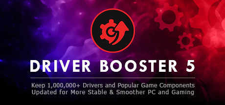

Driver Booster 5 for Steam
Driver Booster 5 for Steam
Details
|  | |
| Playtime | Not Played |
| Last Activity | Never |
| Added | 16/04/2020 |
| Modified | Never |
| Completion Status | Not Played |
| Source | Steam |
| Platform | PC |
| Release Date | 07/11/2017 |
| Community Score | 76 |
| Critic Score | |
| User Score | |
| Genre | Utilities |
| Developer | IObit |
| Publisher | IObit |
| Feature | |
| Links | PCGamingWiki Community Hub Discussions Guides Store Page News |
Description
Hello fellows, we are now introducing you our latest version of Driver Booster. On board now!
Driver Booster 5 for Steam, with its new interactive interface and greatly expanded database which can support more than 1,000,000 drivers and game components, is an easy-to-use yet powerful driver updater. Put simply, it increases your system compatibility & stability and save you plenty of time and effort.
Game components provide a modular way of adding functionality to a game. Without proper components, your game experience would be a disaster. Without needed component, you can’t even launch the game. But finding the perfect component is a time-consuming and difficult work, you can leave this to Driver Booster 5 for Steam.
No matter necessary components for most games based on Windows system like DirectX, VC Runtime or those for better video and audio playback like PhysX, OpenAL can easily get latest updates to give performance increase. Other popular components like UnityWeb, Game for windows software 3.5, MSXML, Silverlight 5, Adobe Flash and audio and graphic drivers from Realtek and Intel all are supported.

Driver Booster 5 for Steam, with its new interactive interface and greatly expanded database which can support more than 1,000,000 drivers and game components, is an easy-to-use yet powerful driver updater. Put simply, it increases your system compatibility & stability and save you plenty of time and effort.
Game Boost
The program can’t start because xxx.dll is missing from your computer - Getting frustrated even annoyed when this message pops up?Game components provide a modular way of adding functionality to a game. Without proper components, your game experience would be a disaster. Without needed component, you can’t even launch the game. But finding the perfect component is a time-consuming and difficult work, you can leave this to Driver Booster 5 for Steam.
No matter necessary components for most games based on Windows system like DirectX, VC Runtime or those for better video and audio playback like PhysX, OpenAL can easily get latest updates to give performance increase. Other popular components like UnityWeb, Game for windows software 3.5, MSXML, Silverlight 5, Adobe Flash and audio and graphic drivers from Realtek and Intel all are supported.
Update 1,000,000+ PC Drivers
As one of the best driver updater, Driver Booster 5 for Steam makes updating drivers simple and is compatible with all versions of Windows system. You will no longer experiemce PC problems caused by missing/faulty/outdated drivers. New Driver Booster 5 for Steam hugely expanded its database supporting update of more than 1,000,000+ drivers. Keep Intel driver/Realtek ethernet controller/wireless lan/network/HD Audio Drivers, Intel Audio/HD Graphics/WLAN/LAN/chipset/rapid storage technology/usb 3.0 Drivers, Nvidia drivers and all important driver packages by Microsoft up-to-date with just 1 click now.100% Secured Driver Updating
To better guarantee your PC’s safety, Driver Booster 5 for Steam only allows https connection with the server while downloading drivers to avoid personal information leak besides providing qualified WHQL drivers. It also automatically backs up a previous copy and creates a system restore point before updating, in case anything unexpected happens.Auto Download, Install and Update
Other than compress driver package for faster download, Driver Booster 5 for Steam adopts new technology for smoother download. Most importantly, to set you free from daily driver-checking and to avoid affecting PC performance while working it supports automatically downloading, installing drivers and game components while system is idle with 150% faster speed.Fix Device Issues
Driver Booster 5 for Steam provides you with six improved useful tools to fix more computer common but headache problems including audio crackling, no sound issue, no network issue, bad resolution issue, and device error.